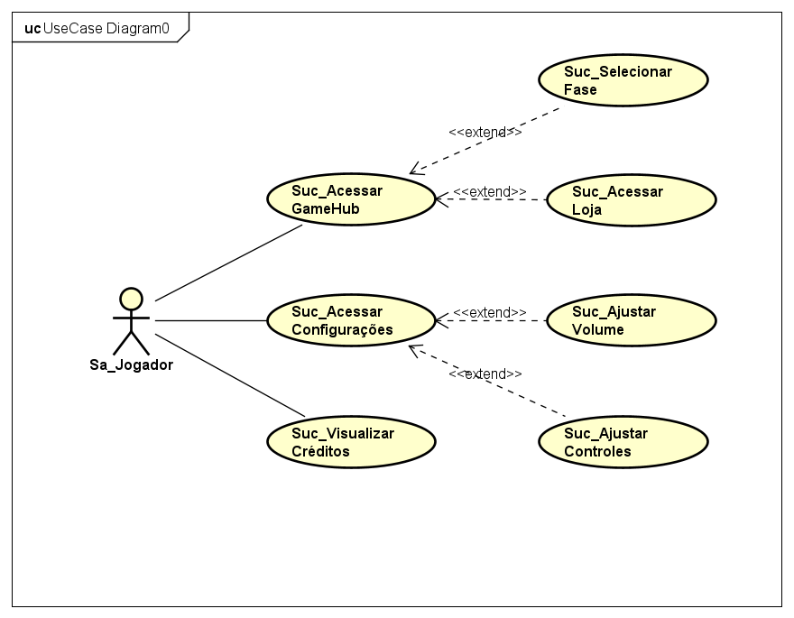

Documentação do Projeto
Esta página contém toda a documentação criada para nossa aplicação, voltada para o Projeto de Extensão.
Caso de Uso

Diagrama de Implementação
Em desenvolvimento.
Documento de Visão
Em desenvolvimento.
Esta página contém toda a documentação criada para nossa aplicação, voltada para o Projeto de Extensão.

Em desenvolvimento.
Em desenvolvimento.